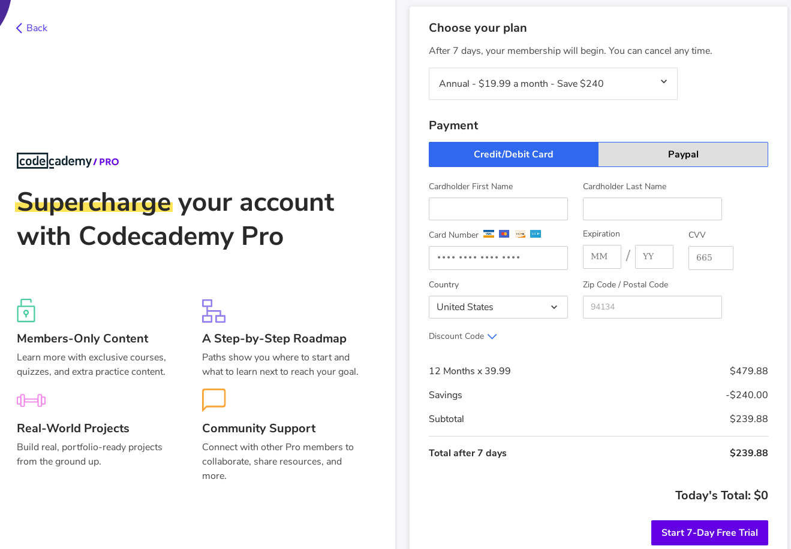
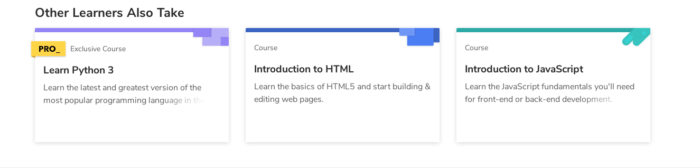

April 5th, 2020
I've had a few people in my life eager to get into programming, and come to me to ask what they should be learning. Often times, they'll simply ask what I started with, or what's the best for making [insert project here]. Well, I've come to say that, no matter what their end goal is, they should learn Python.
If there's one word for why: simplicity. A lot of universities initially have their aspiring students learn Java. It's a mature language, has tons of applications (web, games, applications, android, etc), and they can really learn a lot about things like types and the finer details of OOP. What's wrong then? Take a look at this:
While this may look pretty straightforward to someone already versed in Java, newbies will start scratching their heads, or if they're like me, asking questions. What's a "public static void"? What's "System.out"? What does println mean? What's "String[] args" doing there? Massive confusion. If you try to answer all these questions right there, they'll just have even more and you'll have to practically explain the entire language before they can even write their first program. How do we accomplish this in Python? Simple! print("hello world"). That's it. Even someone who's never written code before can infer that this will print "hello world". They might wonder what's with the parenthesis, or why it needs to be in quotations, but those are fairly easy to explain, especially if they've done a bit of basic algebra and know what a function is.
Remember how I touted Java as being pretty good at being used for a lot of things? Well so is Python! Things like django make it good for writing backends, it's simplicity makes it useful for automating shell scripts, things like numpy can be used for scientists. And more recently, it's gained quite some popularity in the field of machine learning and AI. People who learn Python can go on to do all these things.
Python also teaches a fair bit of good habits. print() only accepts strings, so people trying to stick a number in their output will immediately get an error. This is where it shines over something weakly typed like Javascript. Javascript will simply do it for you can convert the number, but this can have a number of bugs, consider this:
Uh oh. Doing this in Python will have the interpreter yell at you to convert those numbers to strings, so they'll surround both in the str() function and have a happy output that obeys mathematics. Python also has a number of features out-of-box, like OOP. So people who learn Python will learn some of the nice things like object orientated programming can provide.
As someone who took Java in highschool, I can tell you that a lot of the class dropped out. We had 30 people in the class initially, but by the end of week two only myself and four others remained. Why? Is programming really that hard? No, I don't think so. In my Python course, we had very few drop out. The difference? Once again it comes down to Python's simplicity. Right from the get-go you can make the computer print something out on the screen. Very little effort, and you're already getting results. This is a very good thing as it encourages people to keep progressing. Whereas Java will give you vague errors, annoy you for not using semicolons (a common mistake people overlook when starting out) and require you to compile and run your program. With Python, people can actually create things without spending most of their time trying to decipher compiler errors. Java is incredibly frustrating to learn, it's like trying to make quiche without knowing how to fry an egg.
I'm noticing that Python has recently become more of the "industry standard" in teaching new programmers how to code, and I'm very glad for that. Imagine if everyone from my class who dropped out learned Python first instead. We'd have a lot more programmers in the world. For the sake of wrapping up, I'll quickly reiterate my argument for Python:
Another common question I get is how I learned. Initially, I used Codecademy (runs right in a browser and provides numerous tutorials), but I would no longer reccomend it. Back when I used it in 2014, it was entirely free, a tool to learn, not a product. Looking back at it now, I sadly see that it's changed. Logging in six years later, I see this

Hell, they charge to teach you Python now:

Don't give your money to these people. Books are a far superior resource for learning programming anyhow, I personally recommend Think Python: How to Think Like a Computer Scientist read it for free here. That's all I have for today. Thank you for reading and long live Python!